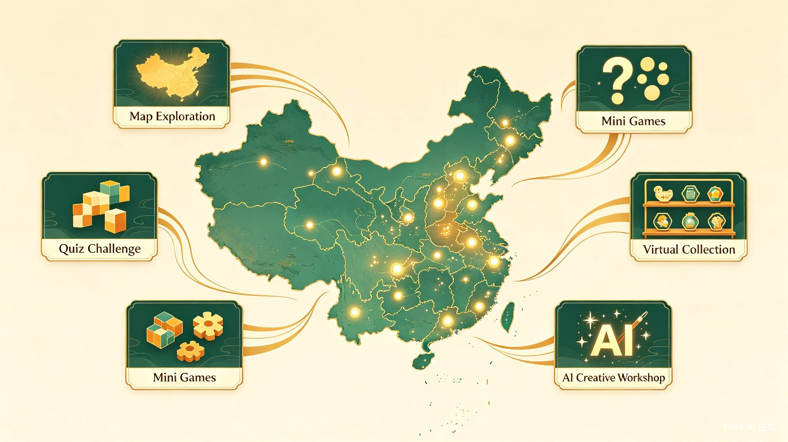

文创多端 App 参赛方案
基于 UniApp 的非遗文创数字化平台 — 参加 TRAE AI 创造力大赛
01 项目背景与行业分析
1.1 文创行业市场概况
2024年中国文创工艺产品行业市场规模已稳步攀升至 3540亿元，延续近年来的稳健增长态势[1]。消费者对兼具文化内涵、美学价值与情感共鸣的产品需求持续升级，推动行业向原创化、品牌化转型。35岁以下消费者占比已达 67%，成为文创消费的核心驱动力[1]。
1.2 非遗数字化政策红利
国家层面"非遗活化"政策持续深化，2025年中央财政专项扶持资金预计增至 86亿元，重点支持景泰蓝、苏绣等23项国家级非遗技艺形成产业化矩阵[1]。文化IP运营商通过挖掘文物、民俗等核心元素，结合现代设计理念开发衍生产品，故宫文创、敦煌研究院等头部IP授权产品年销售额已突破百亿规模。
1.3 行业痛点
设计门槛高
非遗元素与现代设计融合需要专业知识，普通创作者难以参与
认知门槛高
传统文化内容枯燥，年轻人缺乏有趣的方式接触和了解非遗文化
传承断层
年轻一代对非遗文化认知不足，传统技艺面临失传风险
体验单一
现有文创App功能单一，缺乏沉浸式互动和AI辅助创作能力
02 TRAE AI 创造力大赛分析
2.1 大赛基本信息
大赛定位于面向全民的 AI 创新实践赛事，鼓励参赛者从真实生活和工作场景出发，把具体问题转化为可落地的AI产品、工具和解决方案[2]。参赛门槛大幅降低，无需深厚底层技术功底，借助 TRAE Work、TRAE IDE 即可一站式完成创意梳理、项目搭建、应用开发全流程。
2.2 赛道选择分析
大赛设置四条通用赛道（生活娱乐、学习工作、社会服务、硬件交互）及附加公益赛道（智慧助老、青少年身心健康、古籍活化、非遗创新开发）[2]。文创项目天然契合以下赛道：
| 赛道 | 契合度 | 理由 |
|---|---|---|
| 生活娱乐 | ⭐⭐⭐⭐⭐ | 文创消费属于典型的悦己型消费，符合"愉悦开心、好玩有趣"的娱乐精神 |
| 社会公益 — 非遗创新 | ⭐⭐⭐⭐⭐ | 非遗活化与数字化传承是公益赛道的核心子方向，有专项奖金 |
| 社会服务 | ⭐⭐⭐⭐ | 连接非遗传承人与消费者，提供文化服务 |
| 学习工作 | ⭐⭐⭐ | 非遗知识科普与创作学习功能 |
主报 社会公益 — 非遗创新开发（有专项奖金5万元），同时兼顾 生活娱乐 赛道。非遗创新方向既体现社会价值，又有明确的AI技术落地场景，评委从"技术可行性、创意创新性、场景落地价值、商业发展潜力、社会公益意义"多维度评判[2]，非遗活化项目在这五个维度上均有天然优势。
2.3 赛程时间线
提交创意链接、开发Demo并发布参赛帖，前2000名提交作品可获专属礼包和流量扶持
350名晋级选手完善作品，开发完整产品并提交最终版本
20支队伍线下路演对决，冠军30万、亚军20万、季军10万现金奖励
03 产品方案设计
3.1 产品定位
「匠造」— AI赋能的非遗文创数字探索平台
一款基于 UniApp 的多端应用（微信小程序 + H5 + App），以"非遗活化"为核心，采用 地图探索 + 答题挑战 + 小游戏互动 的游戏化机制，用户通过点亮各地区、完成文化任务来解锁虚拟文创藏品。融合 AI 辅助创作、AR 沉浸体验，让传统文化以年轻化、趣味化的方式走进大众生活。所有内容均为虚拟物品，不涉及实物交易。

3.2 核心玩法机制
用户在中国地图上选择地区进行探索，每个地区包含该地的非遗文化内容。通过答题、小游戏等互动方式完成挑战后，解锁该地区专属的虚拟文创藏品。收集的藏品可在 AI 工坊中进行二次创作，生成个性化数字文创作品。
3.3 核心功能模块
模块一：文化地图探索
- 点亮地区：交互式中国地图，用户点击各省份/城市进入对应地区探索，已解锁地区点亮发光，未解锁地区显示剪影
- 地区文化主页：每个地区包含本地非遗项目介绍、传承人故事、文化特色等图文+视频内容
- 探索进度：全国34个省级行政区，每个地区设置3-5个探索任务，完成度以百分比和徽章展示
- 地域排行榜：同地区/同省用户探索进度排名，增加社交竞争趣味
模块二：答题挑战
- 文化答题：每个地区设置5-10道与本地非遗文化相关的选择题、判断题，答对获得积分和星星
- 难度分级：初级（常识题）、中级（知识题）、高级（专家题），不同难度解锁不同稀有度的藏品
- 限时挑战：限时答题模式，答对越多奖励越丰厚，增加紧迫感和趣味性
- 每日答题：每日更新文化知识题目，持续签到答题获取额外奖励
模块三：文化小游戏
- 剪纸模拟：触屏模拟剪纸过程，按照引导折叠和剪切，完成目标图案
- 拼图挑战：将打散的非遗图案（如青花瓷纹样、敦煌壁画）拼回完整图案
- 填色工坊：为国画线稿、景泰蓝纹样等填色，AI评判与标准色的接近度
- 记忆翻牌：非遗文化配对翻牌游戏，记住文化符号的位置并配对
- 书法描红：触屏临摹名家书法，AI识别笔画顺序和结构给出评分
模块四：虚拟文创藏品
- 藏品解锁：完成地区探索任务后解锁该地区专属虚拟文创（如景泰蓝花瓶数字版、苏绣团扇数字版）
- 藏品图鉴：个人藏品展示墙，按地区/稀有度/类型分类浏览已收集的虚拟文创
- 藏品详情：每件藏品附带文化故事、制作工艺介绍、3D旋转预览
- 稀有度系统：普通/稀有/史诗/传说四个等级，高难度任务解锁高稀有度藏品
- 成就系统：收集特定套装（如"江南四景"、"丝绸之路"）解锁额外成就徽章
模块五：AI 文创工坊
- AI 纹样生成：用户输入关键词或上传参考图，AI 自动生成融合非遗元素（如景泰蓝纹样、苏绣针法、敦煌飞天）的现代设计图案
- 藏品二次创作：将已解锁的虚拟藏品作为素材，通过AI辅助进行二次创作（换色、变体、组合）
- 智能配色：基于中国传统色卡（如胭脂、靛蓝、石绿），AI 推荐符合文化调性的配色方案
- 作品分享：将AI创作的文创作品分享到社区，其他用户可点赞、评论
模块六：AR 文化探秘
- AR 藏品展示：将虚拟文创藏品通过AR投射到现实环境中，拍照打卡分享
- AR 地标扫描：到真实文化地标（如博物馆、古迹）扫描触发AR彩蛋，获得隐藏藏品
- 虚拟展厅：3D虚拟博物馆空间，沉浸式浏览已收集的非遗展品
模块七：匠人社区
- 创作分享：用户分享自己的AI文创作品、游戏成就和解锁历程
- 藏品交换：与其他用户交换重复的虚拟藏品，集齐全套
- 文化话题：各地非遗文化讨论区，用户交流文化知识和探索心得
3.4 AI 技术融合亮点
大赛评委强调"技术可行性"和"创意创新性"[2]。以下AI功能是区别于普通文创App的关键差异化点：
AI 纹样生成引擎
基于 Stable Diffusion + LoRA 微调，训练非遗纹样专用模型，支持景泰蓝、苏绣、剪纸等风格迁移
AI 智能出题
基于大语言模型，根据地区文化数据自动生成个性化答题内容，题库可无限扩展
AI 游戏评判
AI识别用户在填色、书法等小游戏中的操作，给出智能评分和改进建议
AI 文案生成
调用大语言模型，为每件虚拟藏品自动生成文化故事和知识讲解文案
04 技术架构方案
4.1 技术栈选型
| 层级 | 技术选型 | 选型理由 |
|---|---|---|
| 前端框架 | UniApp (Vue 3) | 一套代码编译到微信小程序、H5、App（iOS/Android），满足"多端"需求 |
| UI 组件库 | uView UI / uni-ui | 丰富的组件生态，支持自定义主题，适配多端 |
| 状态管理 | Pinia | Vue 3 官方推荐，轻量高效 |
| 后端服务 | uniCloud (Serverless) | 与 UniApp 深度集成，无需自建服务器，快速开发 |
| 数据库 | uniCloud DB (MongoDB) | Serverless 云数据库，支持实时数据推送 |
| AI 服务 | 通义千问 API / Stable Diffusion | 纹样生成、文案生成、图像识别等 AI 能力 |
| AR 能力 | uni-AR / AR.js | 轻量级 AR 体验，支持图片识别和3D模型叠加 |
| 地图服务 | 腾讯地图 SDK | 文化地图功能，展示周边非遗项目 |
4.2 架构设计
采用 uniCloud Serverless 架构，无需购买和维护服务器，按量计费。对于参赛项目而言，可以极大降低运维成本，将精力集中在产品功能和用户体验上。uniCloud 与 UniApp 的深度集成也意味着更快的开发速度。
4.3 页面结构规划
| 页面 | 功能说明 | 优先级 |
|---|---|---|
| 首页 | 文化地图入口、探索进度概览、每日推荐、快捷入口 | P0 |
| 文化地图 | 交互式中国地图、地区点亮状态、进入地区探索 | P0 |
| 地区探索页 | 地区文化介绍、任务列表（答题+小游戏）、解锁进度 | P0 |
| 答题挑战 | 答题界面、难度选择、限时模式、积分结算 | P0 |
| 小游戏中心 | 剪纸、拼图、填色、翻牌、书法等小游戏入口和游戏界面 | P0 |
| 藏品图鉴 | 已解锁藏品展示墙、藏品详情（3D预览+文化故事）、稀有度筛选 | P0 |
| AI工坊 | AI纹样生成、藏品二次创作、智能配色、作品分享 | P1 |
| AR探秘 | AR藏品投射、地标扫描、虚拟展厅 | P1 |
| 匠人社区 | 创作分享动态、藏品交换、文化话题讨论 | P1 |
| 个人中心 | 用户信息、探索成就、藏品统计、每日签到、设置 | P0 |
05 开发计划与里程碑
5.1 总体时间规划（约6周）
项目初始化、UI设计规范制定、首页和TabBar框架搭建、uniCloud后端环境配置、基础数据库设计（地区数据、题库、藏品数据）
文化地图模块（交互式地图+地区点亮）、答题挑战模块（题库+答题流程+积分）、小游戏模块（至少实现2个小游戏：剪纸模拟+拼图挑战）、藏品图鉴模块、个人中心
AI工坊模块（纹样生成+藏品二次创作）、AR探秘模块、匠人社区模块、每日答题和签到系统
UI细节打磨、游戏体验优化、多端兼容测试、Bug修复、数据填充（34个地区文化数据、题库、藏品素材）
参赛材料准备（创意说明文档、演示视频、参赛帖）、最终版本提交
5.2 MVP 最小可行产品范围
初赛阶段只需提交创意链接和开发Demo[2]。建议MVP范围控制在以下功能，确保2-3周内完成：
- 首页：文化地图入口 + 探索进度概览 + 每日推荐
- 文化地图：交互式中国地图，至少覆盖8-10个省份，点亮/未点亮状态切换
- 答题挑战：每个地区3-5道文化答题，选择题形式，积分和星星奖励
- 小游戏：至少实现1个小游戏（推荐拼图挑战，开发成本最低）
- 藏品图鉴：解锁后的虚拟藏品展示页，含文化故事介绍
- 个人中心：基础用户信息、探索进度统计、已收集藏品数量
06 竞争优势与评分维度对标
6.1 评分维度对标
| 评审维度 | 本项目表现 | 支撑点 |
|---|---|---|
| 技术可行性 | 高 | UniApp + uniCloud 成熟技术栈，AI API 即插即用，Serverless 降低运维复杂度 |
| 创意创新性 | 高 | 地图探索+答题+小游戏的游戏化机制在文创领域具有高度创新性，区别于传统文创商城 |
| 场景落地价值 | 高 | 3540亿文创市场有真实需求，游戏化机制有效降低文化认知门槛，解决非遗传承断层问题 |
| 商业发展潜力 | 中高 | 虚拟藏品展示+AI创作工具增值+广告变现+未来实物文创联名，商业模式可扩展 |
| 社会公益意义 | 极高 | 直接对应"非遗创新开发"公益赛道，助力传统文化数字化传承 |
6.2 差异化亮点总结
游戏化文化探索
不是传统的文创展示App，而是以地图探索+答题+小游戏为核心玩法，让文化学习变得像游戏一样有趣上瘾
虚拟藏品收集
稀有度系统+成就套装+藏品交换，满足用户的收集欲望和社交炫耀需求，类似"文化版Pokemon Go"
AI + 非遗深度融合
AI智能出题让题库无限扩展，AI游戏评判提供个性化反馈，AI纹样生成让用户成为"数字匠人"
公益属性突出
非遗活化是国家战略方向，游戏化机制让年轻人在娱乐中学习传统文化，契合大赛公益赛道
07 风险识别与应对策略
| 风险 | 影响 | 应对策略 |
|---|---|---|
| AI API 调用成本高 | 纹样生成和AI出题功能可能受限 | 使用免费额度API（通义千问免费额度）；题库预置+AI动态扩展双模式；设置每日生成次数限制 |
| AR 功能兼容性 | 部分低端设备无法运行AR | AR功能设为P1优先级；提供降级方案（2D图片+视频替代）；优先在H5端实现 |
| 小游戏开发量大 | 5个小游戏全部实现周期过长 | MVP阶段只实现1-2个核心小游戏（拼图+剪纸）；后续版本迭代增加 |
| 地区文化数据量大 | 34个省级行政区的文化数据内容准备耗时 | MVP阶段只覆盖8-10个代表性省份；AI辅助生成文化介绍和答题内容；后续逐步扩展 |
08 下一步行动建议
- 确认参赛报名：在 TRAE 社区发帖报名，获取速通Pro月卡和Token资源
- 项目初始化：使用 TRAE IDE 创建 UniApp 项目，搭建基础框架
- UI设计：确定设计规范（中国风配色、地图视觉风格、游戏化UI元素），输出核心页面设计稿
- 数据准备：收集8-10个代表性省份的非遗文化资料，准备种子题库和虚拟藏品素材
- AI能力验证：测试通义千问API的文化答题生成效果和Stable Diffusion的纹样生成效果
如果你认可这个方案，我可以立即开始帮你搭建 UniApp 项目框架，创建页面结构，配置 uniCloud 后端环境，并开始实现核心功能模块。整个开发过程我会用 TRAE IDE 的 AI 辅助能力来加速编码。